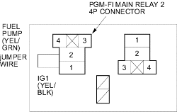
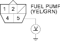
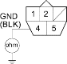

- Connect the PGM-FI main relay 2 4P connector terminals No. 1 and No. 2 with a jumper wire.

- Turn the ignition switch ON (II).
- Measure voltage between the fuel pump 5P connector terminal No. 5 and body ground within the first 2 seconds after the ignition switch was turned ON (II).

Is there battery voltage?
YES |
- Replace the PGM-FI main relay 2. |
NO |
- Repair open in the wire between the PGM-FI main relay 2 and the fuel pump 5P connector. |

- Turn the ignition switch OFF.
- Check for continuity between the fuel pump 5P connector terminal No. 4 and body ground.

Is there continuity?
YES |
- Replace the fuel pump. |
NO |
- Repair open in the wire between the fuel pump 5P connector and G551. |